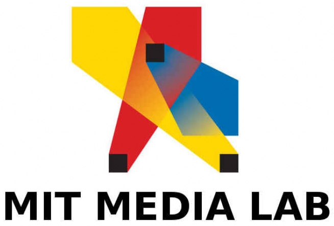
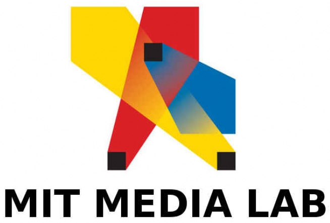

E111077
This is my Github account. The source of this website can be found as a public repository.


 


This is my Github account. The source of this website can be found as a public repository.
I created this website for a user interface and design class. The class was based on user-centered design, user testing, idea/project generation, and design iteration. The site was built on Django, MySQL, and uses jQuery and Semantic UI. The basis of the site is to give a starting point and quick reference to vegans and vegetarians, so that they can quickly tell what is vegan or vegetarian. The content on the site is not completely accurate, because the site was more proof-of-concept and to give an intuitive UI.
The site can be found here, and the source can be found here.
I worked in a team to develop an android application for a class on mobile technology. The class mainly focused on project design and human interaction with technology. Our team created a music game Android application. After user studies, we were able to create a game that would not only be enjoyable, but also improve interaction between people in their daily lives. The app is based on Android SDK using SQLite and the Apache Commons Jaro-Winkler distance library.
The app can be found here, and the source can be found here.
I worked in the MIT Media Lab under a Ph.D student in the Responsive Environments Group. His thesis was based on a more humanly-intuitive way to control lighting that would be used in modern society. My initial goal was to first create a 3D rendition of his idea in the Unity Game Engine that would be of high-enough quality to showcase to current and potential sponsors on the Media Lab sponsor day.
The next goal was to take the research to the physical space and to create a system and mobile interface. The mobile interface was created on Touch OSC for iPhone and Android. I worked with a state-of-the-art Color Kinetics system sponsored by Royal Philips, and created a reliable, research application that would accurately record user input and implement his research algorithms efficiently and effectively.
Source code is not publicly available for this project.